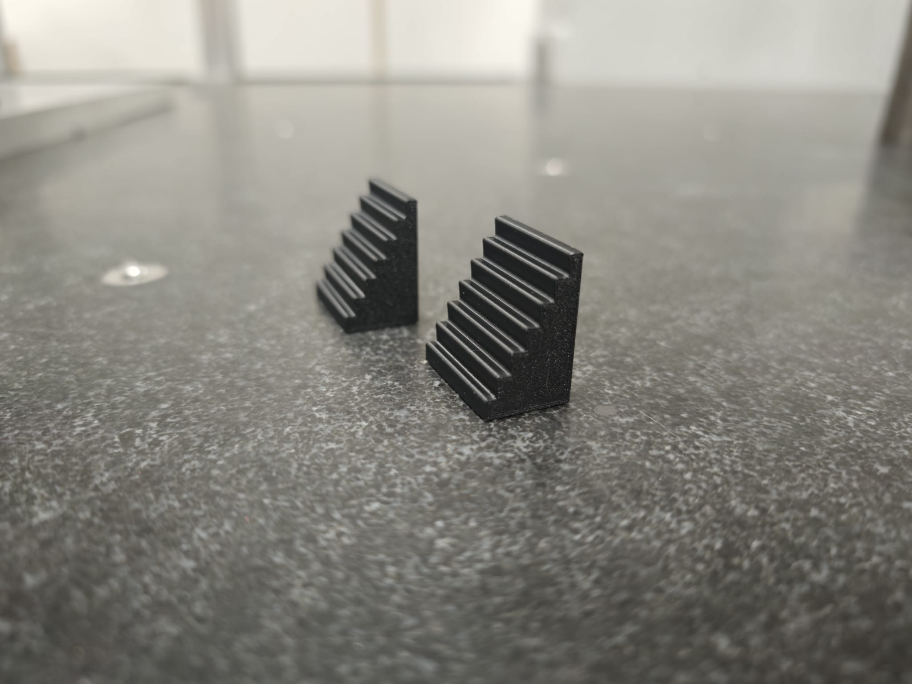

Standard product · supplied as a pair
Request a quote
32.5 mm Stepped Height Adjuster
Compact stepped support for quick setup, packing and fixture adjustment in lighter or more space-constrained setups.

Pair price£5.00ABS stepped height adjusters, supplied as a pair. Custom geometry available on request.
Request this size
What it is for
A simple stepped support for quick packing, setup height adjustment and repeatable fixture support.
Height
32.5 mm overall height with selectable 10 mm, 20 mm and 30 mm widths.
Material
3D printed ABS. Best used as a practical setup aid rather than a calibrated gauge block.
Typical uses
- Compact support and packing
- Fixture packing and adjustment
- Inspection setup aids
- Bench and workshop support jobs
Options
- 10 mm width - £5.00 per pair
- 20 mm width - £6.00 per pair
- 30 mm width - £7.00 per pair
- Custom sizes and geometry available on request